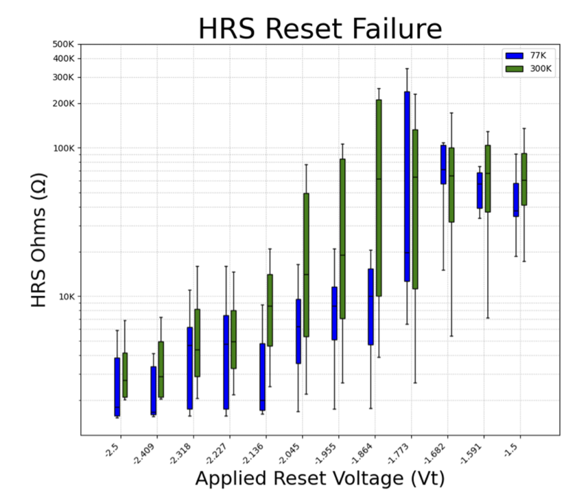
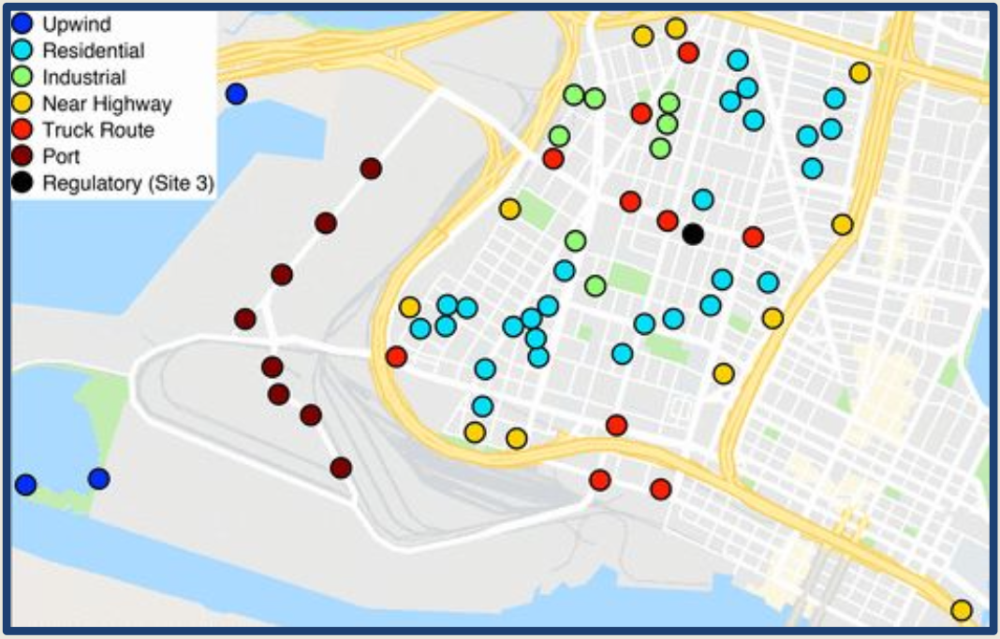

Research & Projects
This page showcases my hands-on research and engineering project experience, highlighting my ability to apply theoretical knowledge to practical challenges.
Academic Research
Cryogenic Characterization of HfO₂ Memristors
Undergraduate Researcher | University of Tennessee Knoxville (Summer 2025)

- RESET-Failure Evaluation: Investigated failure mechanisms in HfO₂-based memristors at 77K using a cryogenic probe station and semiconductor analyzer.
- Octopus PCB: Designed a custom PCB for connecting D-Sub cables to Analog Input/Output Pixies, enabling flexible testing configurations.
Tribology & Surface Interaction Studies
Undergraduate Research | Harvey Mudd College & STLE (2025)

- Modification of Abrasiveness of SLA Components: Studied how resin formulation impacts the abrasive properties of 3D printed parts.
- SLA Additive Manufacturing Review: Reviewed the impact of resin formulations and surface patterning on abrasiveness.
- Optimization of Pizza Making: Investigated the tribological properties of flour-dough interfaces to optimize sliding and reduce burning.
Engineering Clinic Projects
Regenerative Load for HITL Test System (Work in Progress - Fall 2025)
Client: Exolambda
Students: …, Kanoa Parker, …
Advisor: …
Project Liasons: …
My Contributions:
- Collaborating with a team to design and build a regenerative load for a Hardware-in-the-Loop (HITL) test system, requiring a minimum of three variable loads at 48 V and 10 A capacity.
- Heavily involved in the physical building and testing of regenerative aspects, utilizing buck and boost converters and grid-tie inverters to refine the overall architecture.
- Coordinated with team members on variable load development, ensuring interface compatibility (connectors, test points).
- Developed two distinct architecture setups: one feeding power back to AC mains via a grid-tie inverter, and another generating DC voltage back to the PSU.
- Expanded systems-level design capabilities in an open-ended project environment.
Redesign of Low-Cost Sensors used in Community-engaged Air Pollution Monitoring (Fall 2024)

Client: UC Berkeley - Civil & Environmental Engineering
Students: Zhian Zhou, Carmen Horenstein, Madeleine Kan, Thomas Lilygren, Matthew Molinar, Julia Manese, Megan Kho, Kanoa Parker, Marcos Ng Carrion
Advisor: Dr. Yifan Wu
Project Liaisons: Dr. Chelsea Preble, Dr. Tom Kirchstetter
My Contributions:
- Updated communication hardware for an existing air sensor system used to measure air quality around industrial areas of Oakland.
- Researched and identified suitable wireless communication protocols and hardware options to transmit sensor data to a web server.
- Considered numerous outside factors, including location constraints, community WiFi access, signal strength in industrial areas, and LoRaWAN gateway availability.
- Navigated significant system limitations imposed by battery efficiency, which constrained sampling and data transmission rates, impacting overall system operational life.
- Developed a “large system thinking” mindset, identifying factors beyond traditional electrical engineering to create a functional product for public good.
Coursework & Personal Projects
Digital Audio Effects Guitar Pedals (Work in Progress)
Final Project: Electronic and Microprocessor Systems (ENGR155, Fall 2025)
- Developing guitar pedals to add audio effects (degradation chorus, reverb) using an external ADC, FPGA, and STM32 MCU in tandem.
Electronic and Microprocessor Systems (ENGR155) Lab Assignments
Note: These assignments required students to utilize LLMs and critically reflect on their performance and utility.
Analog Operational Amplifier Design
Final Project: Analog Circuit Design (ENGR151, Spring 2025)
(Collaborator: Slader Spoor)
- Designed and constructed a fully operational amplifier from discrete 2N3904 and 2N3906 BJTs, utilizing a suite of passive components (resistors, diodes, capacitors).
- Integrated key subcircuits including a current mirror for biasing, an emitter follower for buffering, a Class AB output stage for high-fidelity signal delivery, and a common emitter with degeneration for stable gain.
- Achieved critical design objectives: high-impedance differential inputs, low output impedance, and high DC gain, demonstrating proficiency in fundamental analog circuit design principles.
Electrocardiogram
Final Project: Electronic and Magnetic Circuits and Devices (ENGR084, Fall 2024)
(Collaborator: Caiya Coggshall)
- Designed and built an electrocardiogram to measure the electrical activity of the heart.
- Used an instrumentation amplifier, high pass filter, low pass filter, and notch filter to process the signal and visualized it on an oscilloscope.
- Skills: Analog Circuit Design, Oscilloscope, Circuit Design.
Autonomous Underwater Vehicle
Final Project: Experimental Engineering (ENGR080, Spring 2024)
- Developed an underwater robot in a team of 4 students to test various nose designs underwater.
- Utilized modified pressure sensors as pitot tubes to measure relative velocity.
- Employed anemometers to measure wind speed and force sensors to measure drag force.
- Skills: Integrated Circuit Design, MATLAB, Soldering, Arduino.
Automatic Ball Feeder
Final Project: Introduction to Engineering Design (ENGR004, Fall 2024)
- In a group of 5 students, constructed a device that would feed baseballs periodically into a Hack Attack Jr. pitching machine.
- Designed a funnel and rail system to store the balls before they were dispensed into the machine.
- Implemented a motor controller and a wheel to vary the speed at which balls were released.
- Skills: Woodworking, Integrated Circuit Design, Teamwork, Communication, AutoCAD.
Remotely Operated Vehicle
Final Project: Introduction to Engineering Systems (ENGR079, Fall 2023)
- Designed a robot capable of vertical movement in water in collaboration with another student.
- Integrated pressure sensors for depth measurement and thermistors for water temperature monitoring.
- Utilized PWM control and motors to adjust the depth of the robot.
- Skills: Integrated Circuit Design, Soldering, LabVIEW, Communication.